Dans tout le cours, \((E,+,.)\) désigne un \(\mathbb{R}\)-espace vectoriel.
Soit \(\left(a_i\right)_{i \in I}\) une famille de \(E\) avec \(I\) fini.
Soit \(\left(\mu_i\right)_{i \in I}\) une famille de \(\mathbb{R}\) telle que \(\sum_{i \in I}\mu_i \neq 0\).
On appelle barycentre de \(\left(\left(a_i\right),\left(\mu_i\right)\right)_{i \in I}\) l’élément \[g = \frac{1}{\sum_{i \in I}\mu_i}\sum_{i \in I}\mu_i a_i.\] On le note \(\mathrm{bar}\left(\left(a_i\right),\left(\mu_i\right)\right)_{i \in I}\).
\(g = \sum_{i \in I}\frac{\mu_i}{\sum_{i \in I}\mu_i} a_i = \sum_{i \in I} \lambda_i a_i\) avec \(\left(\lambda_i\right)_{i \in I}\) qui vérifie \(\sum_{i \in I} \lambda_i = 1\).
Soit \(\alpha \in \mathbb{R}^{\star}\), \(\mathrm{bar}\left(\left(a_i\right),\left(\mu_i\right)\right)_{i \in I}=\mathrm{bar}\left(\left(a_i\right),\left(\alpha\mu_i\right)\right)_{i \in I}\).
Soit \(\left(a_i\right)_{i \in I}\) une famille de \(E\) avec \(I\) fini.
L’isobarycentre de \(\left(a_i\right)_{i \in I}\) est \(\mathrm{bar}\left(\left(a_i\right),1\right)_{i \in I}\) (ou \(\mathrm{bar}\left(\left(a_i\right),\alpha\right)_{i \in I}\) avec \(\alpha \in \mathbb{R}^{\star}\)) tel que \[\mathrm{bar}\left(\left(a_i\right),1\right)_{i \in I} = \frac{1}{n}\sum_{i\in I} a_i.\]
Pour \(a,b \in E\) et \(\lambda,\mu \in \mathbb{R}\) tels que \(\lambda+\mu=1\) alors \(\mu = 1-\lambda\) et \(g_\lambda = \lambda a + \mu b = \lambda a + (1-\lambda )b = a + \lambda (b-a) = a+\lambda \overrightarrow{ab}\).
Si \(a=b\), \(g = a\).
Si \(a\neq b\), \(\left\{g_\lambda / \lambda \in \mathbb{R}\right\}\) est la droite affine passant par \(a\), dirigée par \(\overrightarrow{ab}\), autrement dit : \(a+\mathop{\mathrm{Vect}}{\overrightarrow{ab}}\).
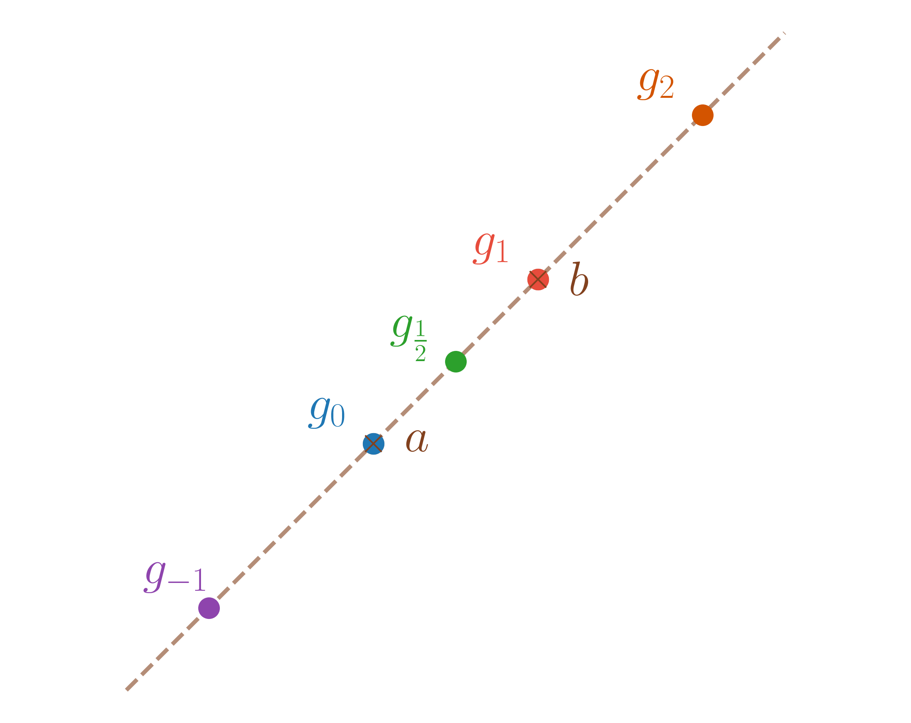
L’isobarycentre de \(a,b\) est leur milieu \(g_{\frac{1}{2}} = \frac{a+b}{2}\).
Soient \(a,b \in E\), on appelle segment d’extrémités \(a\) et \(b\), noté \([a,b]\), l’ensemble \(\left\{\lambda a + \mu b/ \lambda+\mu =1, \lambda \geq 0, \mu \geq 0\right\} = \left\{a + \lambda (b-a)/ \lambda \in [0,1]\right\}\).
Si \(a=b\), \(\left[a,b\right] = \left\{a\right\}\).
\(\left[a,b\right] = \left[b,a\right]\).
Pour \(a,b \in \mathbb{R}\) tels que \(a\leq b\), \([a,b] = \left\{x \in \mathbb{R}/ a \leq x \leq b\right\}.\) En effet,
Si \(t = a+\lambda(b-a)\) avec \(\lambda \in [0,1]\) alors \(t \leq a+b-a = b\) et \(t \geq a\).
Si \(a \leq t \leq b\), \(\lambda = \frac{t-a}{b-a}\) vérifie \(0 \leq \lambda \leq 1\) et \(a+\lambda(b-a) = t-a+a = t\).
Cela redonne le changement de variable très pratique \(u = \frac{t-a}{b-a}\) pour passer d’une intégrale avec \(t \in [a,b]\) à une intégrale avec \(u \in [0,1]\).
Et si on considère trois points ? L’ensemble des barycentres à coefficients positifs de \(a,b,c \in E\) est \[\begin{aligned} & \left\{\lambda_1 a + \lambda_2 b + \lambda_3 c / \begin{array}{ll} & \lambda_1 +\lambda_2 +\lambda_3=1, \\ & \lambda_1 \geq 0, \lambda_2 \geq 0, \lambda_3 \geq 0. \end{array}\right\} \\ =& \left\{(1-\lambda_2-\lambda_3)a + \lambda_2 b + \lambda_3 c / \begin{array}{ll} & \lambda_1 +\lambda_2 +\lambda_3=1, \\ & \lambda_1 \geq 0, \lambda_2 \geq 0, \lambda_3 \geq 0. \end{array}\right\} \\ = &\left\{a + \lambda_2 (b-a) + \lambda_3(c-a) / \begin{array}{ll} & \lambda_2 +\lambda_3 \leq =1, \\ & \lambda_2 \geq 0, \lambda_3 \geq 0. \end{array}\right\} \\ = &\left\{a + \lambda_2 \overrightarrow{ab} + \lambda_3\overrightarrow{ac} / \begin{array}{ll} & \lambda_2 +\lambda_3 \leq 1, \\ & \lambda_2 \geq 0, \lambda_3 \geq 0. \end{array}\right\}. \end{aligned}\]
Il s’agit donc du triangle formé de \(a,b,c\).
Soit \(F\) un \(\mathbb{R}\)-espace vectoriel et \(f \in \mathscr{L}(E,F)\) et \(g = \mathrm{bar}\left(\left(a_i,\mu_i\right)\right)_{i \in I}\) un barycentre de \(E\).
Alors, \(f(g) = \mathrm{bar}\left(\left(f(a_i),\mu_i\right)\right)_{i \in I}\).
Par linéarité de \(f\), \[f(g) = f\left( \frac{1}{\sum_{i \in I}\mu_i}\sum_{i \in I}\mu_i a_i\right) = \frac{1}{\sum_{i \in I}\mu_i}\sum_{i \in I}\mu_i f\left( a_i\right).\]
(Associativité des barycentres) Soit \(\left(a_i\right)_{i \in I}\) une famille de \(E\) avec \(I\) fini.
Soient \(I_1,I_2\) des ensembles finis tels que \(I = I_1 \cup I_2\) et \(I_1 \cap I_2 = \emptyset\).
Soit \(\left(\mu_i\right)_{i \in I}\) une famille de \(\mathbb{R}\) telle que \(\sum_{i \in I}\mu_i \neq 0, \sum_{i \in I_1}\mu_i \neq 0\) et \(\sum_{i \in I_2}\mu_i \neq 0\).
Alors, avec \(g_1 = \mathrm{bar}\left(\left(a_i\right),\left(\mu_i\right)\right)_{i \in I_1}\) et \(g_2 = \mathrm{bar}\left(\left(a_i\right),\left(\mu_i\right)\right)_{i \in I_2}\), \[\mathrm{bar}\left(\left(a_i\right),\left(\mu_i\right)\right)_{i \in I} = \mathrm{bar}\left(\left(g_1,\sum_{i \in I_1}\mu_i\right),\left(g_2,\sum_{i \in I_1}\mu_2\right)\right).\]
On a \[\begin{aligned} \mathrm{bar}\left(\left(a_i\right),\left(\mu_i\right)\right)_{i \in I} & = \frac{1}{\sum_{i \in I}\mu_i}\sum_{i \in I}\mu_i a_i \\ & = \frac{1}{\sum_{i \in I}\mu_i}\sum_{i \in I_1}\mu_i a_i+\frac{1}{\sum_{i \in I}\mu_i}\sum_{i \in I_2}\mu_i a_i \\ & = \frac{1}{\sum_{i \in I}\mu_i}\frac{\sum_{i \in I_1}\mu_i}{\sum_{i \in I_1}\mu_i}\sum_{i \in I_1}\mu_i a_i+\frac{1}{\sum_{i \in I}\mu_i}\frac{\sum_{i \in I_2}\mu_i}{\sum_{i \in I_2}\mu_i}\sum_{i \in I_2}\mu_i a_i \\ & = \frac{1}{\sum_{i \in I}\mu_i}\left(\sum_{i \in I_1}\mu_i\right)g_1+\frac{1}{\sum_{i \in I}\mu_i}\left(\sum_{i \in I_2}\mu_i\right)g_2 \\ & = \frac{1}{\sum_{i \in I_1}\mu_i+\sum_{i \in I_2}\mu_i}\left(\sum_{i \in I_1}\mu_i\right)g_1+\frac{1}{\sum_{i \in I_1}\mu_i+\sum_{i \in I_2}\mu_i}\left(\sum_{i \in I_2}\mu_i\right)g_2. \end{aligned}\]
Soient \(a_1,a_2,a_3,a_4,a_5 \in E\), avec \(g = \frac{a_1+a_2+a_3+a_4+a_5}{5}\), \(g_1 = \frac{a_1+a_2+a_3}{3}\) et \(g_2 = \frac{a_4+a_5}{2}\), \(g = \frac{3g_1+2g_2}{5} = \frac{3}{5}g_1+\frac{2}{5}g_2 = g_1+\frac{2}{5}(g_2-g_1)\).
(Associativité des barycentres,suite) Soit \(\left(a_i\right)_{i \in I}\) une famille de \(E\) avec \(I\) fini.
Soient \(\left(I_j\right)_{1 \leq j \leq p}\) des ensembles finis tels que \(I = \bigcup_{j=1}^p I_j\) et \(I_i \cap I_j = \emptyset\) pour \(i \neq j\).
Soit \(\left(\mu_i\right)_{i \in I}\) une famille de \(\mathbb{R}\) telle que \(\sum_{i \in I}\mu_i \neq 0\) et \(\sum_{i \in I_j}\mu_i \neq 0\) pour \(1 \leq j \leq p\).
Alors, avec \(g_j = \mathrm{bar}\left(\left(a_i\right),\left(\mu_i\right)\right)_{i \in I_j}\) pour \(1 \leq j \leq p\), on a \[\mathrm{bar}\left(\left(a_i\right),\left(\mu_i\right)\right)_{i \in I} = \mathrm{bar}\left(\left(g_j,\sum_{i \in I_j}\mu_i\right)\right)_{1 \leq j \leq p}.\]
Soient \(a,b,c \in E\), \(g = \mathrm{bar}\left(\left(a,1\right),\left(b,1\right),\left(c,1\right)\right) = \frac{a+b+c}{3}\) et \(g_1= \mathrm{bar}\left(\left(a,1\right),\left(b,1\right)\right) = \frac{a+b}{2}\). Alors, on a \(g = \mathrm{bar}\left(\left(g_1,2\right),\left(c,1\right)\right) = \frac{2g_1+c}{3} = g_1+\frac{1}{3}\overrightarrow{g_1c}\).
De même, avec \(g_1= \mathrm{bar}\left(\left(a,1\right),\left(c,1\right)\right) = \frac{a+c}{2}\) et \(g_1= \mathrm{bar}\left(\left(b,1\right),\left(c,1\right)\right) = \frac{b+c}{2}\), on a \(g= g_2+\frac{1}{3}\overrightarrow{g_2b}= g_3+\frac{1}{3}\overrightarrow{g_3a}\).
On a donc \(g\) qui est point d’intersection des trois médianes.
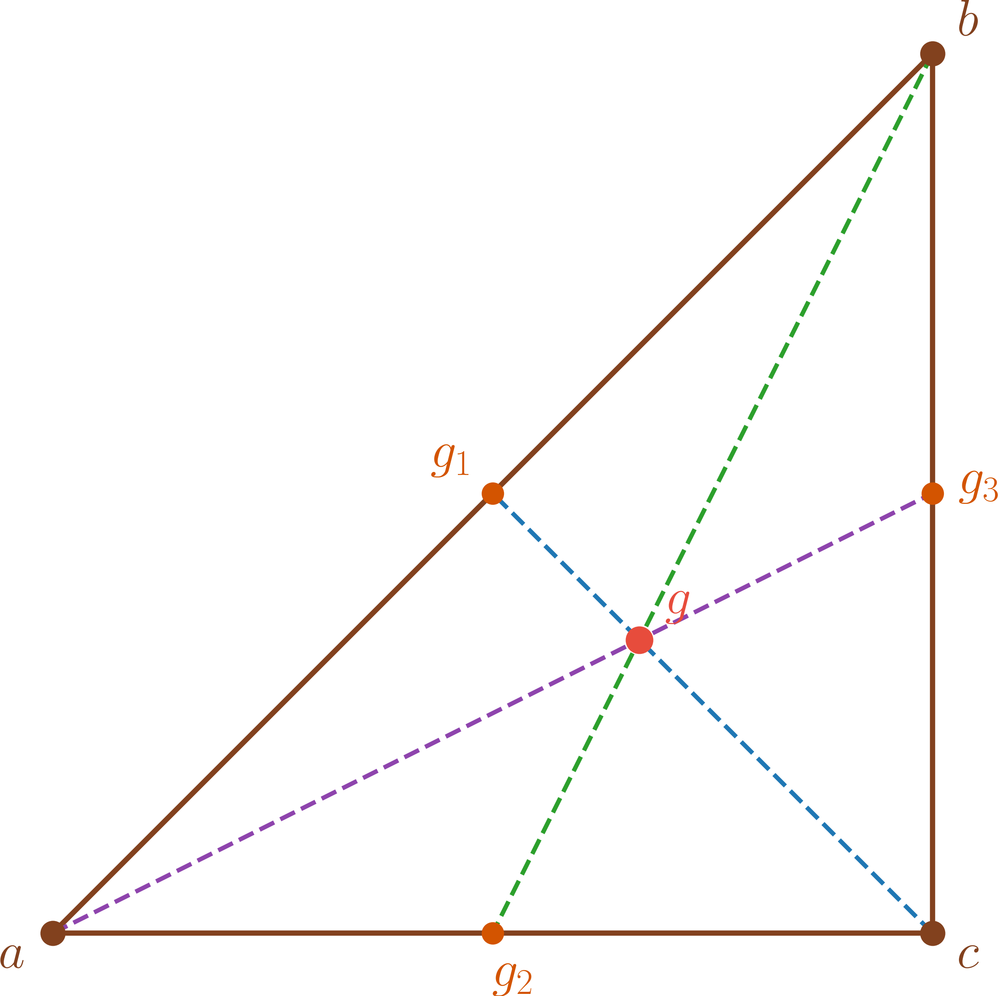
Soient \(a,b,c,d \in E\), \(g = \mathrm{bar}\left(\left(a,1\right),\left(b,1\right),\left(c,1\right),\left(d,1\right)\right) = \frac{a+b+c+d}{4}\) et \(g_1= \mathrm{bar}\left(\left(a,1\right),\left(b,1\right),\left(c,1\right)\right) = \frac{a+b+c}{3}\). Alors, on a \(g = \mathrm{bar}\left(\left(g_1,3\right),\left(c,1\right)\right) = \frac{3g_1+d}{4} = g_1+\frac{1}{4}\overrightarrow{g_1d}\).
On peut aussi faire d’autres groupements comme avec \(g'_1= \mathrm{bar}\left(\left(a,1\right),\left(b,1\right)\right) = \frac{a+b}{2}\) et \(g'_2= \mathrm{bar}\left(\left(c,1\right),\left(d,1\right)\right) = \frac{c+d}{2}\) tels que \(g= \mathrm{bar}\left(\left(g'_1,2\right),\left(g'_2,2\right)\right) = \frac{g'_1+g'_2}{4}\).
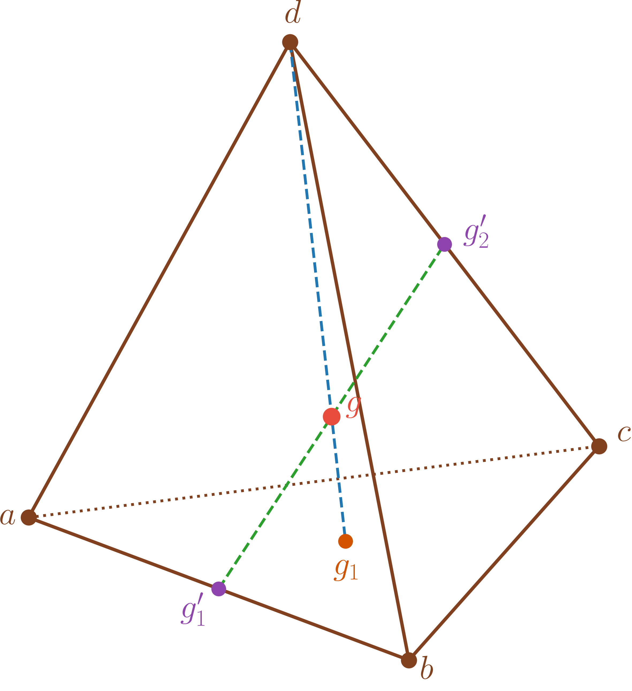
Soit \(A \subset E\).
\(A\) est convexe si pour tout \(x,y \in A\), \(\left[x,y\right] \subset A\)
ie pour tout \(x,y \in A\), pour tout \(\lambda \in [0,1]\), \((1-\lambda)x+\lambda y \in A\).
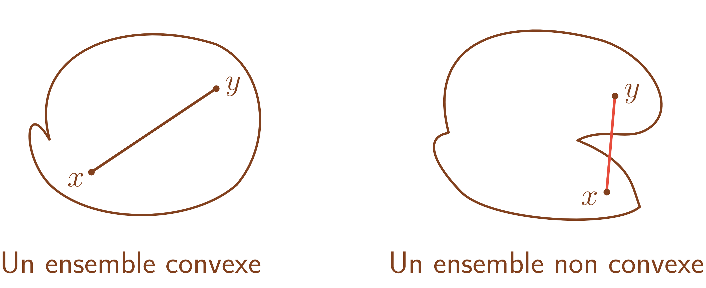
Tout intervalle de \(\mathbb{R}\) est convexe et on a même \(I\) intervalle de \(\mathbb{R}\) \(\iff\) \(I\) est convexe.
Un disque dans \(\mathbb{R}^2\) est convexe.
Tout sous-espace vectoriel ou sous-espace affine de \(E\) est convexe.
Soit \(A \subset E\). \[\text{$A$ convexe} \iff \begin{array}{l} \text{Tout barycentre à coefficients positifs de points de $A$ est encore dans $A$} \\ \text{ie } \forall n \geq 1,\forall a_1,\ldots,a_n \in A \\ \forall \lambda_1,\ldots,\lambda_n \in \mathbb{R}\text{ tels que $\lambda_1 \geq 0, \ldots,\lambda_n \geq 0$ et $\lambda_1+\ldots+\lambda_n = 1$, alors} \\ \lambda_1 a_1+\ldots+\lambda_n a_n \in A. \end{array}\]
\((\Longleftarrow)\) Soient \(x,y \in A\) et \(\lambda \in [0,1]\).
Pour \(n=2\), \(a_1=x, a_2 = y\), \(\lambda_1=1-\lambda, \lambda_2 = \lambda\), on a bien \(\lambda_1 a_1+\lambda_2 a_2 = (1-\lambda)x+ \lambda y \in A\).
\((\Longrightarrow)\) Montrons ce résultat par récurrence sur \(n\).
Initialisation. Pour \(n=1\), avec \(a_1 \in A\) et \(\lambda_1 \in \mathbb{R}^{+}\) tel que \(\lambda_1 = 1\), on a \(\lambda_1 a_1=a_1\in A\).
Hérédité. Soient \(n \in \mathbb{N}^{\star}\), supposons le résultat vrai pour \(n\) points. Soient \(a_1,\ldots,a_n,a_{n+1} \in A\) et \(\lambda_1,\ldots,\lambda_n,\lambda_{n+1} \in \mathbb{R}\) tels que \(\lambda_1 \geq 0, \ldots,\lambda_n,\lambda_{n+1} \geq 0\) et \(\lambda_1+\ldots+\lambda_n+\lambda_{n+1} = 1\).
Posons \(g = \sum_{i=1}^{n+1} \lambda_i a_i\).
Si \(\lambda_{n+1}=1\), \(\lambda_1=\ldots=\lambda_n=0\) donc \(g = a_{n+1} \in A\).
Si \(\lambda_{n+1} \neq 1\), on a \(1-\lambda_{n+1} = \sum_{i=1}^n \lambda_i\) et \[\begin{aligned} g&= \sum_{i=1}^{n+1} \lambda_i a_i = \sum_{i=1}^{n} \lambda_i a_i+\lambda_{n+1}a_{n+1} = (1-\lambda_{n+1})\sum_{i=1}^{n} \frac{\lambda_i}{1-\lambda_{n+1}} a_i+\lambda_{n+1}a_{n+1}. \end{aligned}\]
Or, avec \(g' = \sum_{i=1}^{n} \frac{\lambda_i}{1-\lambda_{n+1}} a_i\), on a \(g' = \sum_{i=1}^{n}\lambda_i' a_i\) avec \(\sum_{i=1}^n \lambda'_i = \sum_{i=1}^n \frac{\lambda_i}{1-\lambda_{n+1}} = \frac{\sum_{i=1}^n \lambda_i}{1-\lambda_{n+1}}=1\) et les \(\lambda'_i\) positifs.
C’est donc un barycentres à coefficients positifs de \(n\) éléments et par hypothèse de récurrence, \(g' \in A\).
De plus, on a alors \(g = (1-\lambda_{n+1})g'+\lambda_{n+1} a_{n+1} \in A\) par convexité de \(A\).
Soit \(F\) un \(\mathbb{R}\)-espace vectoriel et \(f \in \mathscr{L}(E,F)\).
Soit \(A\subset E\) convexe alors \(f(A)\) est convexe,
Soit \(B\subset F\) convexe alors \(f^{-1}(B)\) est convexe.
Soient \(y_1,y_2 \in f(A)\) et \(\lambda \in [0,1]\).
Il existe \(x_1,x_2 \in A\) tels que \(y_1 = f(x_1)\) et \(y_2 = f(x_2)\).
Par linéarité de \(f\), on a \[\lambda y_1+(1-\lambda)y_2 = \lambda f(x_1)+(1-\lambda)f(x_2) = f(\underbrace{\lambda x_1+(1-\lambda)x_2}_{\substack{\in A \\ \text{car $A$ convexe}}}) \in f(A).\]
Soient \(x_1,x_2 \in f^{-1}(B)\) alors \(f(x_1)\in B\) et \(f(x_2) \in B\). Par linéarité de \(f\), on a
\[f(\lambda x_1+(1-\lambda)x_2) = \lambda f(x_1)+(1-\lambda)f(x_2) \in B \text{ par convexité de $B$.}\]
Donc \(\lambda x_1+(1-\lambda)x_2 \in B\).
Soit \(I\) un intervalle de \(\mathbb{R}\). Soit \(f: I \to \mathbb{R}\).
On dit que \(f\) est convexe si \[\forall x,y \in I, \forall \lambda \in [0,1], f\left((1-\lambda)x+\lambda y\right) \leq (1-\lambda)f(x)+\lambda f(y).\] On dit que \(f\) est concave si \[\forall x,y \in I, \forall \lambda \in [0,1], f\left((1-\lambda)x+\lambda y\right) \geq (1-\lambda)f(x)+\lambda f(y).\]
Ci-dessous, on illustre les conséquences géométriques de la convexité (à gauche) ou la concavité (à droite) d’une fonction. Soient \(a,b \in I\), la corde reliant les points d’abscisses \(a\) et \(b\) de la courbe représentative de \(f\) est le segment reliant les points \((a,f(a))\) à \((b,f(b))\). On dit alors que \(f\) est au-dessus (si \(f\) est convexe) ou en-dessous (si \(f\) est concave) de ses cordes.
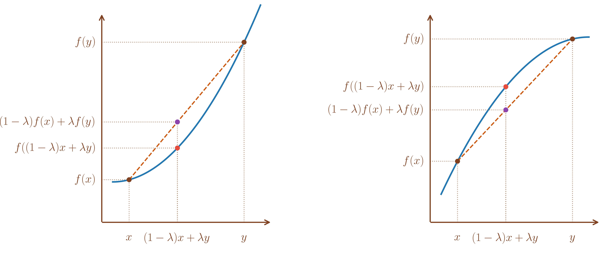
\(f\) convexe \(\iff\) \(f\) concave.
On peut étendre la définition de la convexité à une fonction \(f: A \to \mathbb{R}\) avec \(A \subset E\) un ensemble convexe.
On dit que \(f\) est strictement convexe si
\[\forall x \neq y \in I, \forall \lambda \in ]0,1[, f\left((1-\lambda)x+\lambda y\right) < (1-\lambda)f(x)+\lambda f(y).\]
Si \(f\) est affine, ie il existe \(\alpha, \beta \in \mathbb{R}\) tels que \(f: x \mapsto \alpha x+\beta\), alors pour \(x,y \in I\), \(\lambda \in [0,1]\), \[\begin{aligned} f\left((1-\lambda)x+\lambda y\right) & = \alpha\left((1-\lambda)x+\lambda y\right)+\beta \\ & = (1-\lambda)(\alpha x)+\lambda (\alpha y) + (1-\lambda+\lambda)\beta \\ & = (1-\lambda)(\alpha x+\beta)+\lambda(\alpha y + \beta) \\ & = (1-\lambda)f(x)+\lambda f(y). \end{aligned}\] Donc \(f\) est à la fois convexe et concave. Nous discuterons de la réciproque dans la suite.
Soit \(f : I \to \mathbb{R}\), avec \(I\) un intervalle de \(\mathbb{R}\).
\[f \text{ convexe} \iff \begin{array}{l} \forall n \geq 1,\forall x_1,\ldots,x_n \in I \\ \forall \lambda_1,\ldots,\lambda_n \in \mathbb{R}\text{ tels que $\lambda_1 \geq 0, \ldots,\lambda_n \geq 0$ et $\lambda_1+\ldots+\lambda_n = 1$, alors} \\ \qquad f\left(\lambda_1 x_1+\ldots+\lambda_n x_n\right)\leq \lambda_1 f(x_1)+\ldots+\lambda_n f(x_n). \end{array}\]
\((\Longleftarrow)\) Avec \(n=2\), on retrouve la définition d’une fonction convexe (avec \(\lambda_2 = \lambda \in [0,1]\), \(\lambda_1 = 1-\lambda\), \(x_1 = x\) et \(x_2 = y\)).
\((\Longrightarrow)\) Montrons ce résultat par récurrence sur \(n\).
Initialisation. Pour \(n=1\), avec \(x_1 \in I\) et \(\lambda \in \mathbb{R}^{+}\) tel que \(\lambda = 1\), on a \(\lambda_1 x_1 x_1\) donc \(f(\lambda_1 x_1) = f(x_1)\).
Hérédité. Soient \(n \in \mathbb{N}^{\star}\), supposons le résultat vrai pour \(n\) points. Soient \(x_1,\ldots,x_n,x_{n+1} \in I\) et \(\lambda_1,\ldots,\lambda_n,\lambda_{n+1} \in \mathbb{R}\) tels que \(\lambda_1 \geq 0, \ldots,\lambda_n,\lambda_{n+1} \geq 0\) et \(\lambda_1+\ldots+\lambda_{n+1} = 1\).
Posons \(g = \sum_{i=1}^{n+1} \lambda_i x_i\).
Si \(\lambda_{n+1}=1\), \(\lambda_1=\ldots=\lambda_n=0\) donc \(g = x_{n+1}\) et \(f\left( \sum_{i=1}^{n+1} \lambda_i x_i\right) = f(x_{n+1}) = \sum_{i=1}^{n+1} \lambda_i f(x_i)\).
Si \(\lambda_{n+1} \neq 1\), on a \(1-\lambda_{n+1} = \sum_{i=1}^n \lambda_i\) et \[\begin{aligned} g&= \sum_{i=1}^{n+1} \lambda_i x_i = \sum_{i=1}^{n} \lambda_i x_i+\lambda_{n+1}x_{n+1} = (1-\lambda_{n+1})\sum_{i=1}^{n} \frac{\lambda_i}{1-\lambda_{n+1}} x_i+\lambda_{n+1}x_{n+1}. \end{aligned}\]
avec \(g' = \sum_{i=1}^{n} \frac{\lambda_i}{1-\lambda_{n+1}} x_i\), par convexité de \(f\), on a \[f(g) = f((1-\lambda_{n+1})g'+\lambda_{n+1}x_{n+1}) \leq (1-\lambda_{n+1})f(g')+\lambda_{n+1}f(x_{n+1}).\]
Or, on a \(g' = \sum_{i=1}^{n}\lambda_i' x_i\) avec \(\sum_{i=1}^n \lambda'_i = \sum_{i=1}^n \frac{\lambda_i}{1-\lambda_{n+1}} = \frac{\sum_{i=1}^n \lambda_i}{1-\lambda_{n+1}}=1\) et les \(\lambda'_i\) positifs.
C’est donc un barycentres à coefficients positifs de \(n\) éléments et par hypothèse de récurrence, \[f(g') \leq \sum_{i=1}^{n}\lambda_i'f(x_i) = \sum_{i=1}^{n} \frac{\lambda_i}{1-\lambda_{n+1}}f(x_i).\]
On a donc \[f(g) \leq (1-\lambda_{n+1}) \sum_{i=1}^{n} \frac{\lambda_i}{1-\lambda_{n+1}}f(x_i)+\lambda_{n+1}f(x_{n+1}) = \sum_{i=1}^{n+1} \lambda_i f(x_i).\]
Soit \(f : I \to \mathbb{R}\), avec \(I\) un intervalle de \(\mathbb{R}\). \[\mathrm{epi}(f) = \left\{(x,y) \in \mathbb{R}^2 / y \geq f(x)\right\}\] est appelé l’épigraphe de \(f\).
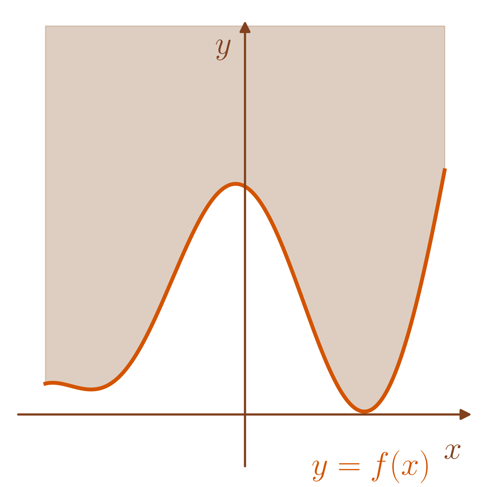
Soit \(f : I \to \mathbb{R}\), avec \(I\) un intervalle de \(\mathbb{R}\).
\[f \text{ est convexe} \iff \mathrm{epi}(f) \text{ est convexe}.\]
\((\Longrightarrow)\) Soient \((x_1,y_1),(x_2,y_2) \in \mathrm{epi}(f)\) et \(\lambda \in [0,1]\).
Alors, \(y_1 \geq f(x_1)\) et \(y_2 \geq f(x_2)\). De plus, pour \(\lambda \in [0,1]\), par convexité de \(f\), \[(1-\lambda)y_1 + \lambda y_2 \geq (1-\lambda)f(x_1) + \lambda f(x_2) \geq f\left((1-\lambda)x_1+\lambda x_2\right).\]
Donc \((1-\lambda)(x_1,y_1)+\lambda(x_2,y_2) = \left((1-\lambda)x_1+\lambda x_2,(1-\lambda)y_1+\lambda y_2 \right) \in \mathrm{epi}(f)\) et \(\mathrm{epi}(f)\) est convexe.
\((\Longleftarrow)\) Soient \(x,y \in I\) et \(\lambda \in [0,1]\). Alors, \((x,f(x)) \in \mathrm{epi}(f)\) et \((y,f(y)) \in \mathrm{epi}(f)\).
Or, \(\mathrm{epi}(f)\) est convexe donc \((1-\lambda)(x,f(x))+\lambda (y,f(y)) = \left((1-\lambda)x+\lambda y, (1-\lambda)f(x)+\lambda f(y)\right) \in \mathrm{epi}(f)\), ce qui signifie \(f((1-\lambda)x+\lambda y) \leq (1-\lambda)f(x)+\lambda f(y)\) donc \(f\) est convexe.
Soit \(f : I \to \mathbb{R}\), avec \(I\) un intervalle de \(\mathbb{R}\).
Alors, \[\begin{aligned} 1.\text{ } f \text{ est convexe} \iff & 2.\text{ }\forall x < y < z \in I, \\ & \frac{f(y)-f(x)}{y-x} \leq \frac{f(z)-f(x)}{z-x} \leq \frac{f(z)-f(y)}{z-y} \\ \iff & 3.\text{ }\forall a \in I, \\ & \varphi_a : x \in I\setminus\left\{a\right\} \mapsto \frac{f(x)-f(a)}{x-a} \text{ est croissante.} \end{aligned}\]
Les quantités \(\frac{f(y)-f(x)}{y-x}\), \(\frac{f(z)-f(x)}{z-x}\) et \(\frac{f(z)-f(y)}{z-y}\) sont trois pentes de cordes.
En les notant respectivement \(P_1,P_2,P_3\), l’inégalité \(P_1 \leq P_2 \leq P_3\) est illustrée ci-contre.
Montrons \(1. \Longrightarrow 2.\), \(2. \Longrightarrow 3.\) puis \(3. \Longrightarrow 1.\).
\((1. \Longrightarrow 2.)\) Soit \(f\) convexe et \(x < y < z \in I\).
Alors, \[\begin{aligned} \frac{f(y)-f(x)}{y-x} \leq \frac{f(z)-f(x)}{z-x} & \iff f(y)-f(x) \leq (y-x)\frac{f(z)-f(x)}{z-x} \text{ car $y-x > 0$} \\ & \iff f(y) \leq \frac{y-x}{z-x}f(z)+\left(1-\frac{y-x}{z-x}\right)f(x) \\ & \iff f(y) \leq \frac{y-x}{z-x}f(z)+\frac{z-y}{z-x}f(x). \end{aligned}\]
Or, en écrivant \(\lambda = \frac{y-x}{z-x}\), on a \(\lambda > 0\), \(\lambda \geq \frac{z-x}{z-x} = 1\), \(1-\lambda = \frac{z-y}{z-x}\) puis \((1-\lambda)x+\lambda z = x+\lambda(z-x) = x+y-x=y\).
Donc, par convexité de \(f\), on a bien \[f(y) \leq \lambda f(z)+(1-\lambda)f(x) = \frac{y-x}{z-x}f(z)+\frac{z-y}{z-x}f(x)\] donc l’inégalité voulue.
On peut obtenir de même \(\frac{f(z)-f(x)}{z-x} \leq \frac{f(z)-f(y)}{z-y}\).
\((2. \Longrightarrow 3.)\)
Soient \(x < y \in I \setminus \left\{a\right\}\).
Si \(x < y < a\), alors par \(P_2 \leq P_3\), on a
\(\frac{f(x)-f(a)}{x-a}=\frac{f(a)-f(x)}{a-x} \leq \frac{f(a)-f(y)}{a-y}=\frac{f(y)-f(a)}{y-a}.\)
Donc \(\varphi_a(x) \leq \varphi_a(y)\).
Si \(x < a < y\), alors par \(P_1 \leq P_3\), on a
\(\frac{f(x)-f(a)}{x-a}=\frac{f(a)-f(x)}{a-x} \leq \frac{f(y)-f(a)}{y-a}.\)
Donc \(\varphi_a(x) \leq \varphi_a(y)\).
Si \(a<x < y\), alors par \(P_1 \leq P_2\), on a
\(\frac{f(x)-f(a)}{x-a} \leq \frac{f(y)-f(a)}{y-a}.\)
Donc \(\varphi_a(x) \leq \varphi_a(y)\).
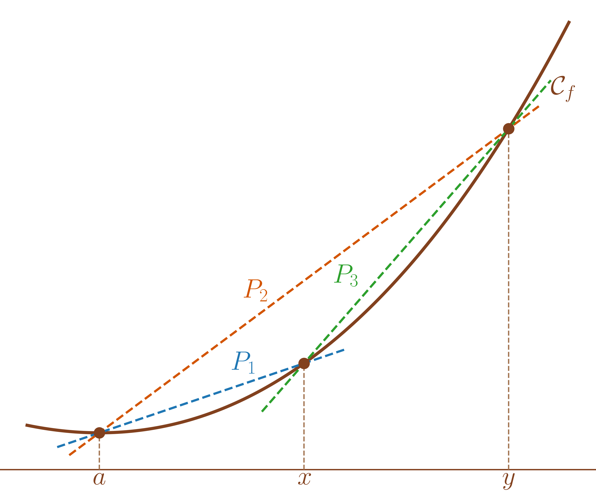
\((3. \Longrightarrow 1.)\) Soient \(x < z \in I\), \(\lambda \in ]0,1[\) et \(y = (1-\lambda)x+\lambda z \in ]x,z[\).
On a alors \(\lambda = \frac{y-x}{z-x}\).
De plus, par croissance de \(\varphi_x\), on a \[\begin{aligned} \varphi_x(y) \leq \varphi_x(z) & \iff \frac{f(x)-f(y)}{x-y} \leq \frac{f(x)-f(z)}{x-z} \\ & \iff \frac{f(y)-f(x)}{y-x} \leq \frac{f(z)-f(x)}{z-x} \text{ par égalité des termes respectifs}\\ & \iff f(y) \leq \frac{y-x}{z-x}f(z)+\left(1-\frac{y-x}{z-x}\right)f(x) \text{ car $z-x > 0$} \\ & \iff f(t) \leq \lambda f(z)+(1-\lambda)f(x). \end{aligned}\] L’inégalité de convexité étant évidente pour \(\lambda = 0\), \(\lambda = 1\) ou \(x=z\), on a \(f\) qui est convexe.
On a en fait \(P_1 \leq P_2 \iff P_2 \leq P_3 \iff P_1 \leq P_3\).
Soit \(f : I \to \mathbb{R}\), avec \(I\) un intervalle de \(\mathbb{R}\).
\[f \text{ est convexe et concave } \iff f \text{ est affine}.\]
\((\Longleftarrow)\) a été montré dans l’exemple [ex:affine_est_convexe_concave].
\((\Longrightarrow)\) Soit \(a \in I\), Comme \(f\) est convexe, par le 3. de la proposition [prop:convexe_trois_pentes], \(\varphi_a\) est croissante.
De plus, comme \(f\) est concave, \(-f\) est convexe donc \(-\varphi_a\) est croissante et \(\varphi_a\) est donc aussi décroissante.
On en déduit que \(\varphi_a\) est constante et qu’il existe \(\alpha \in \mathbb{R}\) tel que pour tout \(x \in I \setminus\left\{a\right\}\), \(\varphi_a(x) = \alpha\).
On a donc pour tout \(x \in I \setminus\left\{a\right\}\), \(\frac{f(x)-f(a)}{x-a} = \alpha \iff f(x) = \alpha(x-a)+f(a)\).
Cette relation reste vrai en \(x=a\) et donc pour tout \(x \in I\), \(f(x) = \alpha x +\left(f(a)-\alpha a\right)\) et \(f\) est affine.
Soit \(f : I \to \mathbb{R}\) convexe, avec \(I\) un intervalle de \(\mathbb{R}\).
Soient \(a < b \in I\) et \(x \in I \setminus [a,b]\).
Alors, \(f(x) \geq \frac{f(b)-f(a)}{b-a}(x-a)+f(a).\)
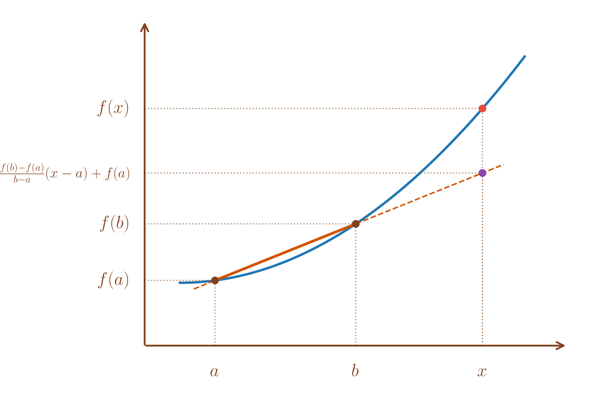
\(y= \frac{f(b)-f(a)}{b-a}(x-a)+f(a)\) est la droite prolongeant la corde reliant \(a\) à \(b\) de la courbe représentative de \(f\). Si la courbe de \(f\) se trouve bien sous ses cordes. La proposition dit qu’en les points hors du segment \([a,b]\), la courbe de \(f\) se trouve du-dessus de cette droite.
Comme \(f\) est convexe, par le 3. de la proposition [prop:convexe_trois_pentes], \(\varphi_a\) est croissante.
Si \(x < a\), on a donc \(\frac{f(x)-f(a)}{x-a} = \varphi_a(x) \leq \varphi_a(b) = \frac{f(b)-f(a)}{b-a} \iff f(x)\geq \frac{f(b)-f(a)}{b-a}(x-a)+f(a)\) (car \(x -a< 0\)).
Si \(x > b\), on a donc \(\frac{f(x)-f(a)}{x-a} = \varphi_a(x) \geq \varphi_a(b) = \frac{f(b)-f(a)}{b-a} \iff f(x)\geq \frac{f(b)-f(a)}{b-a}(x-a)+f(a)\) (car \(x -a> 0\)).
Soit \(f : I \to \mathbb{R}\) convexe, avec \(I\) un intervalle de \(\mathbb{R}\).
Alors, si \(f\) est dérivable, \[f \text{ est convexe } \iff f' \text{ est croissante}\] donc si \(f\) est deux fois dérivable, comme \(I\) est un intervalle, \[f \text{ est convexe } \iff f'' \text{ est positive.}\]
\((\Longleftarrow)\) Soient \(x < z \in I\) et \(\lambda \in ]0,1[\) tel que \(y = (1-\lambda)x+\lambda z \in ]x,y[\). On a alors \(\lambda = \frac{y-x}{z-x}\) et \(1-\lambda = \frac{z-y}{z-x}\).
On a alors \[\begin{aligned} & f((1-\lambda)x+\lambda z) \leq (1-\lambda)f(x)+\lambda f(z) \\ & \iff f(y) \leq \left(1-\frac{y-x}{z-x}\right)f(x)+ \frac{y-x}{z-x} f(z) \\ & \iff f(y)-f(x) \leq \frac{y-x}{z-x}(f(z)-f(x)) \\ & \iff \frac{f(y)-f(x)}{y-x} \leq \frac{f(z)-f(x)}{z-x}\text{ car $y-x > 0$.} \end{aligned}\]
On a alors \[\begin{aligned} & f(\underbrace{(1-\lambda)x+\lambda z}_{=y}) \leq (1-\lambda)f(x)+\lambda f(z) \\ & \iff \left(1-\lambda+\lambda\right)f(y) \leq (1-\lambda)f(x)+ \lambda f(z) \\ & \iff \left(1-\lambda\right)\left(f(y)-f(x)\right) \leq\lambda (f(z)-f(y)) \\ & \iff \frac{z-y}{z-x}\left(f(y)-f(x)\right) \leq \frac{y-x}{z-x}(f(z)-f(y)) \\ & \iff (z-y)(f(y)-f(x)) \leq (y-x)(f(z)-f(y))\text{ car $z-x > 0$.} \\ & \iff\frac{f(y)-f(x)}{y-x} \leq \frac{f(z)-f(y)}{z-y}\text{ en divisant par $y-x >0$ puis $z-y >0$.} \end{aligned}\]
Or, \(f\) est dérivable sur \(]x,y[\) et continue sur \([x,y]\) (car dérivable aussi) donc par l’égalité des accroissements finis, il existe \(c_{xy} \in ]x,y[\) tel que \(\frac{f(y)-f(x)}{y-x} = f'(c_{xy})\).
De même, il existe \(c_{yz} \in ]y,z[\) tel que \(\frac{f(z)-f(y)}{z-y} = f'(c_{yz})\).
Or, \(f'\) est croissante et \(c_{xy} < y < c_{yz}\).
Donc \(f'(c_{xy}) \leq f'(c_{yz})\) puis \(\frac{f(y)-f(x)}{y-x} \leq \frac{f(z)-f(y)}{z-y}\).
\((\Longrightarrow)\) Soient \(a < b \in I\). Soient \(h_a,h_b \in \mathbb{R}^{+\star}\) avec \(h_a\) assez petit tel que \(a < a+h_a < b < b+h_b\).
Par le 2. de la proposition [prop:convexe_trois_pentes], on a avec \(x = a, y = a+h_a, z = b\) et en ne gardant que \(P_1 \leq P_2\), \[\frac{f(a+h_a)-f(a)}{h_a} \leq \frac{f(b)-f(a)}{b-a}\] Puis, toujours par le 2. de la proposition [prop:convexe_trois_pentes], on a avec \(x = a, y = b, z = b+h_b\) et en ne gardant que \(P_1 \leq P_3\), \[\frac{f(b)-f(a)}{b-a} \leq \frac{f(b+h_b)-f(b)}{h_b}\]
On en déduit \[\frac{f(a+h_a)-f(a)}{h_a} \leq \frac{f(b)-f(a)}{b-a}\leq \frac{f(b+h_b)-f(b)}{h_b}.\]
En faisant \(h_a \longrightarrow 0^+\), on a \[f'(a) \leq \frac{f(b)-f(a)}{b-a}\leq \frac{f(b+h_b)-f(b)}{h_b}.\] Puis, en faisant \(h_b \longrightarrow 0^+\), on a \[f'(a) \leq \frac{f(b)-f(a)}{b-a}\leq f'(b).\]
Donc \(f'(a) \leq f'(b)\) et \(f'\) est croissante.
Soit \(f: I \to \mathbb{R}\) convexe avec \(I\) intervalle de \(\mathbb{R}\) et \(a \in I\). Alors, \(f\) est dérivable à gauche et à droite de \(a\) avec \(f_g'(a) \leq f_d'(a)\).
Par le 3. de la proposition [prop:convexe_trois_pentes], \(\varphi_a\) est une fonction croissante. Elle admet donc une limite, finie ou non en \(a^+\) et \(a^-\).
Or, soient \(h_+,h_- \in \mathbb{R}^{+\star}\) assez petits tels que \(a-h_-, a+h_+ \in I\) (\(a\) n’est pas une borne de \(I\)).
\(\varphi_a\) est majorée sur \(I \cap ]-\infty,a[\) par \(\varphi_a(a+h_+)\) donc la limite en \(a^-\) est finie et on la note \(\ell_g\).
De même, \(\varphi_a\) est minorée sur \(I \cap ]a,+\infty[\) par \(\varphi_a(a-h_-)\) donc la limite en \(a^+\) est finie et on la note \(\ell_d\).
Ensuite, \[\begin{aligned} \varphi_a(a-h_-) \leq \varphi_a(a+h_+) & \iff \frac{f(a-h_-)-f(a)}{-h_-} \leq \frac{f(a)-f(a+h_+)}{-h_+} \\ & \iff \frac{f(a+(-h_-))-f(a)}{-h_-} \leq \frac{f(a+h_+)-f(a)}{h_+}. \end{aligned}\] En faisant \(h_- \longrightarrow 0^+\), on a \[\ell_g = f_g'(a) \leq \frac{f(a+h_+)-f(a)}{h_+}.\] Puis en faisant \(h_- \longrightarrow 0^+\), on a \[f_g'(a) \leq \ell_d = f_d'(a).\]
En reprenant des techniques similaires à la preuve précédente, on peut montrer que \(f_g'\) et \(f_d'\) sont croissantes.
Soit \(f: I \to \mathbb{R}\) convexe avec \(I\) intervalle de \(\mathbb{R}\).
En notant \(\mathring{I}\) l’intervalle \(I\) privé de ses bornes, \(f\) est continue sur \(\mathring{I}\).
Soit \(a \in \mathring{I}\), par la proposition [prop:convexe_Est_Derivee_adroite_et_a_gauche], \(f\) est dérivable à droite et à gauche en \(a\).
On a donc \(\frac{f(a+h)-f(a)}{h} \xrightarrow[h \to 0^-]{} f_g'(a) \Longrightarrow f(a+h)-f(a) \xrightarrow[h \to 0^-]{} 0 \Longrightarrow f(a+h) \xrightarrow[h \to 0^-]{} f(a)\)
puis \(\frac{f(a+h)-f(a)}{h} \xrightarrow[h \to 0^+]{} f_d'(a) \Longrightarrow f(a+h)-f(a) \xrightarrow[h \to 0^+]{} 0 \Longrightarrow f(a+h) \xrightarrow[h \to 0^+]{} f(a)\).
Donc \(f(a+h) \xrightarrow[h \to 0]{} f(a)\) et \(f\) est continue en \(a\).
En général \(f\) n’est pas continue sur \(I\), comme le démontre le graphe ci-contre.
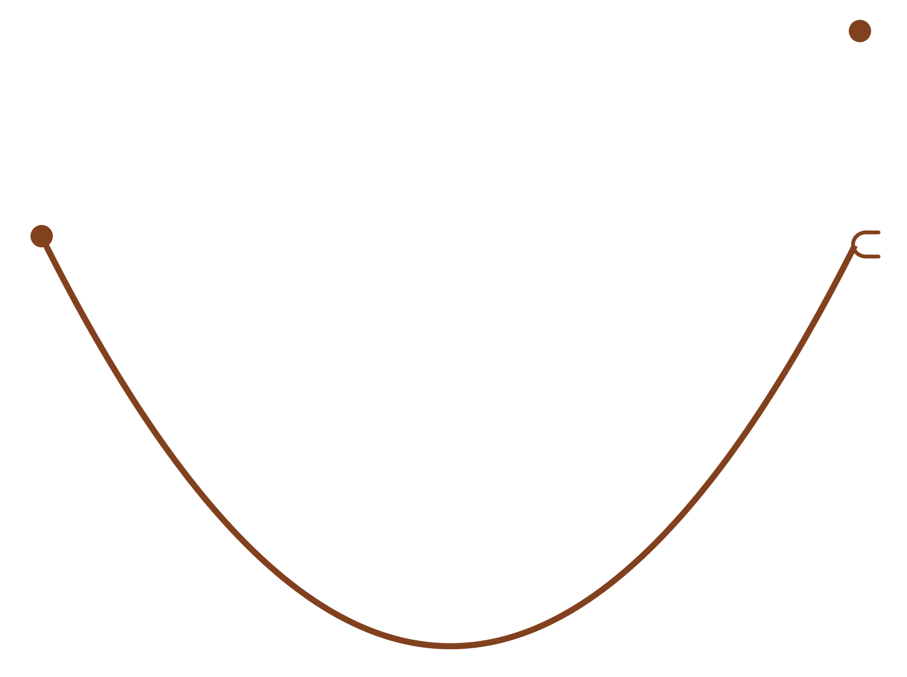
Soit \(f : I \to \mathbb{R}\) convexe, avec \(I\) un intervalle de \(\mathbb{R}\). Soit \(a \in I\) tel que \(f\) est dérivable en \(a\).
Alors, la courbe de \(f\) se situe au-dessus de sa tangente au point d’abscisse \(a\), ie
\[\forall x \in I, f(x) \geq f'(a)(x-a)+f(a).\]
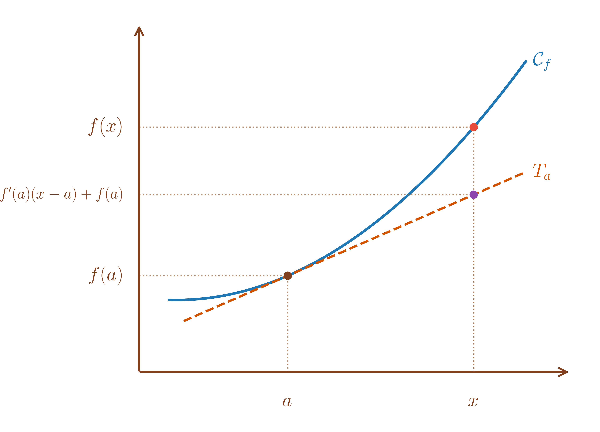
Si \(x=a\), on a égalité.
Si \(x > a\), soit \(h \in \mathbb{R}^{+\star}\) assez petit tel que \(a < a+h < x\), alors on a par le 2. de la proposition [prop:convexe_trois_pentes], en gardant \(P_1 \leq P_2\), on a \(\frac{f(a+h)-f(a)}{h} \leq \frac{f(x)-f(a)}{x-a}\). Comme \(x-a > 0\), on en déduit \(f(x) \geq (x-a)\frac{f(a+h)-f(a)}{h}+f(a)\) puis en faisant \(h \longrightarrow 0^+\), on a bien \(f(x) \geq f'(a)(x-a)+f(a).\)
Si \(x < a\), soit \(h \in \mathbb{R}^{+\star}\) assez petit tel que \(x < a-h < a\), alors on a par le 2. de la proposition [prop:convexe_trois_pentes], en gardant \(P_2 \leq P_3\), on a \(\frac{f(a)-f(x)}{a-x} \leq \frac{f(a)-f(a-h)}{h}\). Comme \(a-x > 0\), on en déduit \(f(x) \geq -(a-x)\frac{f(a)-f(a-h)}{h}+f(a)= (x-a)\frac{f(a)-f(a-h)}{h}+f(a) = (x-a)\frac{f(a-h)-f(a)}{-h}+f(a)\) puis en faisant \(h \longrightarrow 0^+\), on a bien \(f(x) \geq f'(a)(x-a)+f(a).\)
Soit \(f : I \to \mathbb{R}\) dérivable, avec \(I\) un intervalle de \(\mathbb{R}\). Alors, \[f \text{ convexe } \iff \text{$f$ se trouve au-dessus de ses tangentes.}\]
\((\Longrightarrow)\) a été prouvée dans la proposition [prop:convexe_est_au_dessus_de_ses_tangentes].
\((\Longleftarrow)\) Soient \(x < y < z \in I\). Alors, avec \(\lambda = \frac{y-x}{z-x} \in ]0,1[\) tel que \(1-\lambda = \frac{z-y}{z-x}\), on a \(y = (1-\lambda)x+\lambda z\).
On a alors, par hypothèse, \[\begin{aligned} & f(x) \geq f'(y)(x-y)+f(y) \iff f'(y) \geq \frac{f(x)-f(y)}{x-y} =\frac{f(y)-f(x)}{y-x} \text{ car $x-y < 0$}\\ \text{et } & f(z) \geq f'(y)(z-y)+f(y) \iff f'(y) \leq \frac{f(z)-f(y)}{z-y} \text{ car $z-y > 0$}. \\ \end{aligned}\]
On a donc \[\begin{aligned} & \frac{f(y)-f(x)}{y-x} \leq \frac{f(z)-f(y)}{z-y} \\ \iff & f(y)\left(\frac{1}{y-x}+\frac{1}{z-y}\right) \leq \frac{f(x)}{y-x}-\frac{f(z)}{z-y} \\ \iff & f(y)\frac{z-x}{(y-x)(z-y)} \leq \frac{f(x)}{y-x}-\frac{f(z)}{z-y} \\ \iff & f(y) \leq \frac{z-y}{z-x}f(x)+f(z)\frac{y-x}{z-x} \text{ car $z-x > 0$, $y-x>0$ et $z-y > 0$} \\ \iff & f(y) \leq (1-\lambda)f(x)+\lambda f(z). \end{aligned}\] Donc \(f\) est convexe.
\(\quad\)
Avec \(\begin{array}{lllll} f & : & \mathbb{R} & \to & \mathbb{R} \\ & & x & \mapsto & e^x \end{array}\), on a \(f\) qui est deux fois dérivables sur \(\mathbb{R}\) avec \(\begin{array}{lllll} f'' & : & \mathbb{R} & \to & \mathbb{R} \\ & & x & \mapsto & e^x \end{array}\) qui est positive. \(\exp\) est donc convexe.
En examinant la tangente en \(0\) d’équation \(y=e^0(x-0)+e^0 = x+1\), on tombe sur l’inégalité \[\enclose{roundedbox}{\forall x \in \mathbb{R}, e^x \geq x+1.}\]
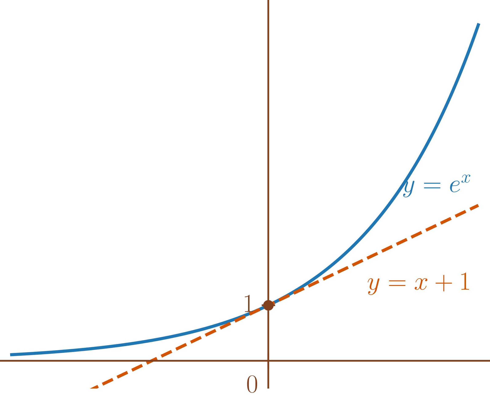
\(\quad\)
Avec \(\begin{array}{lllll} f & : & \mathbb{R} & \to & \mathbb{R} \\ & & x & \mapsto & \ln(x) \end{array}\), on a \(f\) qui est deux fois dérivables sur \(\mathbb{R}^{+\star}\) avec \(\begin{array}{lllll} f'' & : & \mathbb{R} & \to & \mathbb{R} \\ & & x & \mapsto & -\frac{1}{x^2} \end{array}\) qui est négative. \(\ln\) est donc concave.
En examinant la tangente en \(1\) d’équation \(y=\frac{1}{1}(x-1)+\ln(1) = x-1\), on tombe sur l’inégalité \[\enclose{roundedbox}{\forall x \in \mathbb{R}^{+\star}, \ln(x) \leq x-1.}\] On la préfèrera souvent sous la forme \[\enclose{roundedbox}{\forall x > -1, \ln(1+x) \leq x.}\]
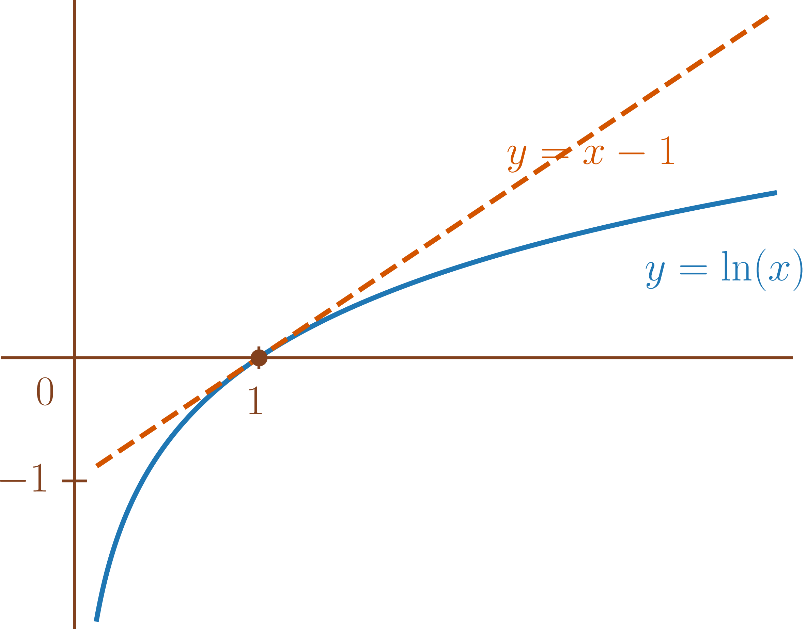
\(\quad\)
Soient \(\alpha \in \mathbb{R}\) et \(\begin{array}{lllll} f_\alpha & : & \mathbb{R}^{+\star} & \to & \mathbb{R} \\ & & x & \mapsto & x^\alpha = e^{\alpha \ln(x)} \end{array}\), on a \(f\) qui est deux fois dérivables sur \(\mathbb{R}^{+\star}\) avec \(\begin{array}{lllll} f_\alpha' & : & \mathbb{R}^{+\star} & \to & \mathbb{R} \\ & & x & \mapsto & \alpha x^{\alpha-1} \end{array}\) puis \(\begin{array}{lllll} f_\alpha'' & : & \mathbb{R}^{+\star} & \to & \mathbb{R} \\ & & x & \mapsto & \alpha(\alpha-1) x^{\alpha-2} \end{array}\) qui est du signe de \(\alpha(\alpha-1)\).
Donc
si \(\alpha < 0\), \(f_\alpha\) est convexe,
si \(\alpha = 0\), \(f_\alpha\) est constante (donc convexe et concave),
si \(0 < \alpha < 1\), \(f_\alpha\) est concave,
si \(\alpha = 1\), \(f_\alpha\) est affine (donc convexe et concave),
si \(\alpha > 1\), \(f_\alpha\) est convexe.
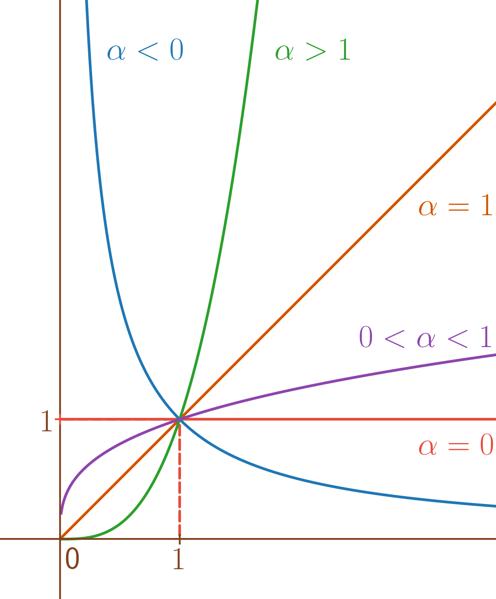
La fonction \(\sin\) est deux fois dérivables de dérivées seconde \(-\sin\).
Elle est donc concave sur \([0,\pi]\) et convexe sur \([-\pi,0]\).
Si on observe sa tangente en \(0\) d’équation \(y = \cos(0)(x-0)+\sin(0) = x\), on a pour tout \(x \in \mathbb{R}\), \(\sin(x) \leq x\).
Mais en fait, on a plus efficace, comme elle est de dérivée \(\cos\) qui est bornée en valeur absolue par \(1\), \(\sin\) est \(1\)-lipshitzienne et en prenant \(x \in \mathbb{R}\), \(y = 0\), on a \(\left|\sin(x)-\sin(y)\right|= \left|\sin(x)\right|\) puis \(\left|x-y\right| = \left|y\right|\) donc \[\text{\ovalbox{$\forall x \in \mathbb{R}, \left|\sin(x)\right| \leq \left|x\right|$.}}\]
Une inégalité utile est la suivante : La corde entre \((0,0)\) et \((\frac{\pi}{2},\sin\left(\frac{\pi}{2}\right)) = \left(\frac{\pi}{2},1\right)\) est le segment entre \(x=0\) et \(x=1\) de la droite \(\frac{1-0}{\frac{\pi}{2}-0}x = \frac{2}{\pi}x\).
Par concavité de \(\sin\) sur \(\left[0,\frac{\pi}{2}\right]\), on en déduit \[\forall x \in \left[0,\frac{\pi}{2}\right], \sin(x) \geq \frac{2}{\pi}x.\] De même, par convexité de \(\sin\) sur \(\left[-\frac{\pi}{2},0\right]\), on en déduit \[\forall x \in \left[-\frac{\pi}{2},0\right], \sin(x) \leq \frac{2}{\pi}x.\] Donc, finalement, \[\enclose{roundedbox}{\forall x \in \left[-\frac{\pi}{2},\frac{\pi}{2}\right], \left|\sin(x)\right| \geq \frac{2}{\pi}\left|x\right|.}\]
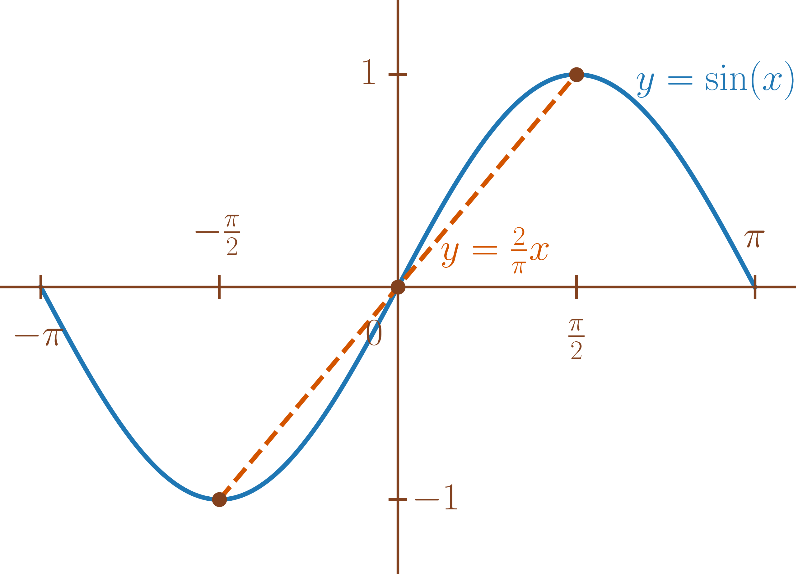
Exercice — Soit \(f : I \to \mathbb{R}\) une fonction convexe avec \(I\) non majoré (donc de la forme \([a,+\infty[\), \(]a,+\infty[\) our \(\mathbb{R}\)).
Montrer que \(x \in I \cap \mathbb{R}^{+\star}\mapsto \frac{f(x)}{x}\) admet une limite \(\ell \in \overline{\mathbb{R}}\) en \(+\infty\).
Si \(\ell\) est finie, montrer que \(x \in I \cap \mathbb{R}^{+\star}\mapsto \frac{f(x)}{x}-\ell x\) admet une limite \(\ell' \in \overline{\mathbb{R}}\) en \(+\infty\).
Corrigé —
Soit \(a \in I\), on sait par le 3. de la proposition [prop:convexe_trois_pentes] que \(\varphi_a : x \in I \setminus \left\{a\right\} \mapsto \frac{f(x)-f(a)}{x-a}\) est croissante et elle admet donc une limite \(\ell_a \in \overline{\mathbb{R}}\) en \(+\infty\).
De plus, pour \(x \in I\) tel que \(x > 0\), \(\frac{f(x)}{x} = \frac{1}{x}\left(f(x)-f(a)+f(a)\right) = \frac{1}{x}(f(x)-f(a))+\frac{f(a)}{x} = \frac{x-a}{x}\frac{f(x)-f(a)}{x-a}+\frac{f(a)}{x}\).
Or, \(\frac{x-a}{x} \xrightarrow[x \to +\infty]{} 1\) et \(\frac{f(a)}{x}\xrightarrow[x \to +\infty]{} 0\).
Donc \(\frac{f(x)}{x} \xrightarrow[x \to +\infty]{} \ell_a\). On a montré par la même occasion que \(\ell_a\) ne dépend pas de \(a\).
Montrons que \(g : x \in I \cap \mathbb{R}^{+\star}\mapsto f(x)-\ell x\) est croissante ce qui conclura. Soient \(x < y \in I\), \[g(y)-g(x) = f(y)-\ell y-\left(f(x)-\ell x\right) = f(y)-f(x)+\ell(y-x) = (y-x)\left(\frac{f(y)-f(x)}{y-x}-\ell\right).\]
Or, \(y-x > 0\) et d’après la question précédente, \(\ell\) est la limite croissante de \(x \mapsto \frac{f(y)-f(x)}{y-x}\) en \(+\infty\). Donc \(\frac{f(y)-f(x)}{y-x}-\ell \geq 0\) donc \(g(y) \geq g(x)\) et \(g\) est croissante. Elle admet donc une limite dans \(\overline{\mathbb{R}}\) en \(+\infty\).
Donc dans le cas où \(\ell, \ell'\) sont finies, \(f\) admet l’asymptote oblique \(y = \ell x +\ell'\) en \(+\infty\).
Exercice — Soit \(p \in [1,+\infty[\).
Montrer que \(\begin{array}{lllll} f & : & \mathbb{R}^{+\star} & \to & \mathbb{R} \\ & & t & \mapsto & \left(1+t^{\frac{1}{p}}\right)^p \end{array}\) est concave.
Soit \(n \in \mathbb{N}^{\star}\). En déduire \[\begin{array}{l} \forall x_1,\ldots,x_n \geq 0, \\ \forall y_1,\ldots,y_n \geq 0, \end{array} \left(\sum_{k=1}^n (x_k+y_k)^p\right)^{\frac{1}{p}} \leq \left(\sum_{k=1}^n x_k^p\right)^{\frac{1}{p}}+\left(\sum_{k=1}^n y_k^p\right)^{\frac{1}{p}}\]
Corrigé —
\(f\) est dérivable sur \(\mathbb{R}^{+\star}\) avec pour tout \(t > 0\), \[f'(t) = p \frac{1}{p}t^{\frac{1}{p}-1}\left(1+t^{\frac{1}{p}}\right)^{p-1}=t^{\frac{1}{p}-1}\left(1+t^{\frac{1}{p}}\right)^{p-1}.\] \(f'\) est alors dérivable sur \(\mathbb{R}^{+\star}\) avec pour tout \(t > 0\), \[\begin{aligned} f''(t) & =\left(\frac{1}{p}-1\right)t^{\frac{1}{p}-2}\left(1+t^{\frac{1}{p}}\right)^{p-1}+(p-1)t^{\frac{1}{p}-1} \frac{1}{p}t^{\frac{1}{p}-1}\left(1+t^{\frac{1}{p}}\right)^{p-2} \\ & = \left(\frac{1}{p}-1\right)t^{\frac{1}{p}-2}\left(1+t^{\frac{1}{p}}\right)^{p-2}\left(1+t^{\frac{1}{p}}-t^{\frac{1}{p}}\right) \\ & = \frac{1-p}{p}t^{\frac{1}{p}-2}\left(1+t^{\frac{1}{p}}\right)^{p-2} \geq 0 \text{ car $1-p \geq 0$.} \end{aligned}\] Donc \(f\) est concave.
Commençons par supposer \(x_1,\ldots,x_n > 0\) et \(y_1,\ldots,y_n > 0\). On a alors \[\begin{aligned} & \left(\sum_{k=1}^n (x_k+y_k)^p\right)^{\frac{1}{p}} \leq \left(\sum_{k=1}^n x_k^p\right)^{\frac{1}{p}}+\left(\sum_{k=1}^n y_k^p\right)^{\frac{1}{p}} \\ \iff & \sum_{k=1}^n (x_k+y_k)^p \leq \left(\left(\sum_{k=1}^n x_k^p\right)^{\frac{1}{p}}+\left(\sum_{k=1}^n y_k^p\right)^{\frac{1}{p}} \right)^p\\ \iff & \sum_{k=1}^n (x_k+y_k)^p \leq \left(\left(\sum_{j=1}^n x_j^p\right)^{\frac{1}{p}}+\left(\sum_{k=1}^n y_k^p\right)^{\frac{1}{p}} \right)^p \begin{array}{l} \text{(un changement d'écriture pour} \\ \text{faciliter la lecture dans la suite)} \end{array}\\ \iff & \sum_{k=1}^n x_k^p\left(1+\frac{y_k}{x_k}\right)^p \leq \left(\sum_{j=1}^n x_j^p\right)\left(1+\frac{\left(\sum_{k=1}^n y_k^p\right)^{\frac{1}{p}}}{\left(\sum_{j=1}^n x_j^p\right)^{\frac{1}{p}}} \right)^p\\ \iff & \sum_{k=1}^n x_k^p\left(1+\left(\frac{y^p_k}{x^p_k}\right)^{\frac{1}{p}}\right)^p \leq \left(\sum_{j=1}^n x_j^p\right)\left(1+\left(\frac{\sum_{k=1}^n y_k^p}{\sum_{j=1}^n x_j^p}\right)^{\frac{1}{p}}\right)^p\\ \iff & \sum_{k=1}^n x_k^pf\left(\frac{y^p_k}{x^p_k}\right) \leq \left(\sum_{j=1}^n x_j^p\right) f\left(\frac{\sum_{k=1}^n y_k^p}{\sum_{j=1}^n x_j^p}\right)\\ \iff & \sum_{k=1}^n \frac{x_k^p}{\sum_{j=1}^n x_j^p}f\left(\frac{y^p_k}{x^p_k}\right) \leq f\left(\sum_{k=1}^n \frac{y_k^p}{\sum_{j=1}^n x_j^p}\right)\\ \iff & \sum_{k=1}^n \frac{x_k^p}{\sum_{j=1}^n x_j^p}f\left(\frac{y^p_k}{x^p_k}\right) \leq f\left(\sum_{k=1}^n \frac{x_k^p}{\sum_{j=1}^n x_j^p}\frac{y_k^p}{x_k^p}\right)\\ \end{aligned}\] En posant \(\lambda_k = \frac{x_k^p}{\sum_{j=1}^p x_j^p}\) pour \(1 \leq k \leq n\), on a \(\lambda_1,\ldots, \lambda_n \geq 0\) et \(\sum_{k=1}^n \lambda_k = 1\) donc l’inégalité est vraie pas concavité de \(f\).
Sinon, soit \(\varepsilon > 0\), le cas précédent s’applique à \(x_1+\varepsilon,\ldots,x_n+\varepsilon > 0\) et \(y_1+\varepsilon,\ldots,y_n +\varepsilon> 0\).
On a donc \[\left(\sum_{k=1}^n (x_k+y_k+2\varepsilon)^p\right)^{\frac{1}{p}} \leq \left(\sum_{k=1}^n \left(x_k+\varepsilon\right)^p\right)^{\frac{1}{p}}+\left(\sum_{k=1}^n \left(y_k+\varepsilon\right)^p\right)^{\frac{1}{p}}.\]
Puis en faisant \(\varepsilon \longrightarrow 0^+\), on a le résultat.